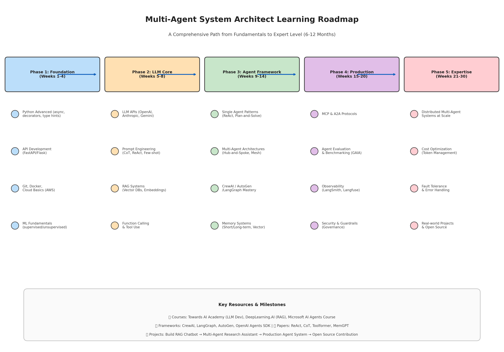
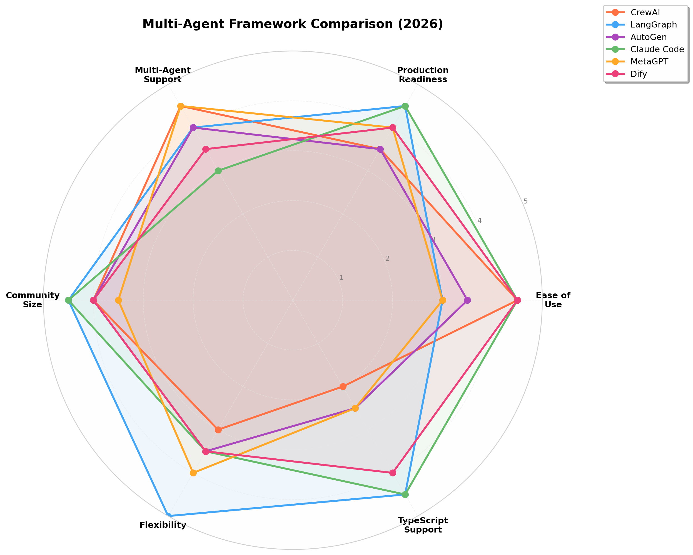
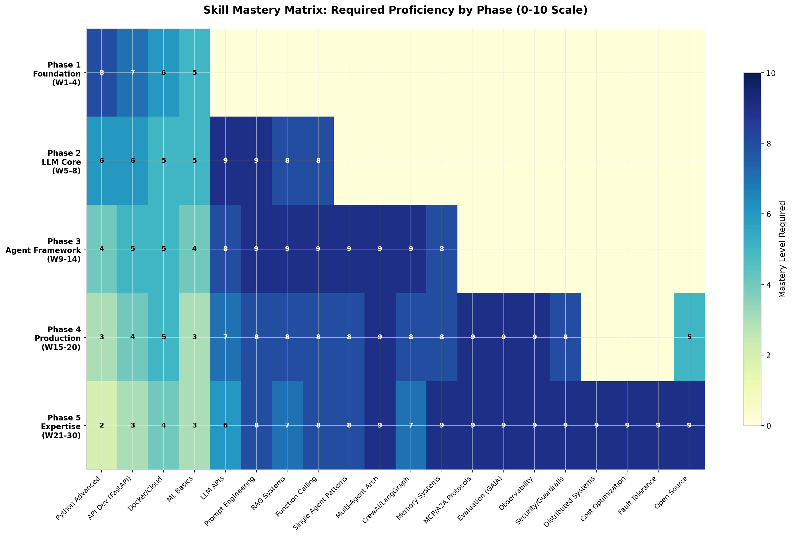

2025-2026 完整学习路线图与技术指南
本报告为成为多智能体系统（MAS）架构师提供了一条结构化、基于证据的学习路径——这是 2025-2026 年最热门的 AI 工程岗位之一。全球智能体 AI 市场预计到 2033 年达到982.6 亿美元（年复合增长率 46.87%），到 2026 年底40% 的企业应用将内嵌任务专用 AI 智能体。MAS 架构师在美国市场的薪资范围为18万-40万美元以上，智能体 AI 工作流专家的薪资比通用 AI 工程师高出25-35%。
路线图分为五个阶段，历时 6-12 个月：(1) 基础（Python 进阶、API 开发、Docker/云、ML 基础）；(2) LLM 核心（LLM API、提示词工程、RAG、函数调用）；(3) 智能体框架（单/多智能体模式、CrewAI/LangGraph/AutoGen、记忆系统）；(4) 生产部署（MCP/A2A 协议、GAIA 基准评估、LangSmith 可观测性、安全/防护栏）；(5) 专家级（分布式 MAS 规模化、成本优化、容错、实战项目）。
三种主流生产架构模式：Hub-and-Spoke（编排器-工作者，2-5秒延迟）、Flat Mesh（点对点，高容错）、Hierarchical（树形结构，企业工作流）。

多智能体系统（MAS）是一个框架，其中多个自主 AI 智能体各自拥有专门的角色、工具和能力，在共享环境中协调以完成超出任何单一智能体范围的任务。与单智能体系统不同，MAS 将工作分布在并行运行的专业智能体之间，能够更精确、更可靠地处理复杂的跨领域问题。Google 研究发现协调开销可能导致顺序推理任务的性能下降39-70%，因此为任务匹配合适的架构是关键的设计决策。
任何 MAS 的有效性取决于三个核心机制：任务分解与委派，将高层请求拆解为可管理的子任务；通信协议，标准化智能体之间交换信息和优化输出的方式；共享记忆与上下文，作为"单一事实来源"，防止智能体重复工作或偏离主要目标。
根据对 AgentsIndex 目录中生产实现的分析，Hub-and-Spoke是 2026 年生产环境中最常见的模式，出现在绝大多数实现中。
| 架构模式 | 控制级别 | 容错能力 | 调试难度 | 延迟 | 适用场景 |
|---|---|---|---|---|---|
| Hub-and-Spoke | 高（集中式） | 低（单点故障） | 简单 | 每任务 2-5秒 | 独立子任务、客服分流、代码生成 |
| Flat Mesh | 低（涌现式） | 高（无中心节点） | 复杂 | 可变 | 开放式探索、模拟、自适应工作流 |
| Hierarchical | 中（分层式） | 中 | 中等 | 较高（多层） | 跨领域企业工作流、QA 流水线 |
中央编排器智能体作为枢纽，将用户目标分解为子任务，将每个子任务路由给专业的工作者智能体，并聚合结果。工作者之间不直接通信，所有协调都通过编排器进行。这形成了单一可追踪的控制流，使调试相对简单。生产延迟为每任务委托周期 2-5 秒。编排器的质量是任何 MAS 中最关键的设计决策——任务分解有缺陷会导致整个流水线失败，无论各个工作者多么强大。该模式在 LangGraph（监管者模式）、AutoGen（群聊选择器）、CrewAI（管理模式）和 OpenAI Agents SDK 中均有实现。
智能体之间直接通信，无需中央协调器。协调从交互协议和共享状态中涌现，而非自上而下。这带来了高容错能力（无单点故障）和最大灵活性，但代价是可观测性。调试复杂的 Flat Mesh 工作流需要追踪每一对智能体之间的交互，这也是该模式在 2026 年生产环境中远不如 Hub-and-Spoke 常见的原因。CAMEL-AI 是点对点多智能体框架的著名示例。
实现树形结构，管理者智能体委派给专家智能体，专家智能体再委派给工作者智能体。多层结构允许每层都有领域专长。顶层管理者理解业务目标；中层专家处理各自领域（法律、财务、技术）；工作者执行原子操作。该架构处理需要每层真正具备主题专业知识的企业工作流，无法扁平化为两层 Hub-and-Spoke 模型。
两个协议已成为 2025-2026 年智能体互操作性的事实标准：MCP（模型上下文协议）和A2A（智能体间协议）。它们在协议栈的不同层运行，相互补充——MCP 处理单个智能体如何访问外部能力，A2A 处理系统内智能体如何相互协调。
MCP由 Anthropic 于 2024 年 11 月推出，在 14 个月内被 OpenAI、Google DeepMind 和微软采纳，成为最广泛支持的智能体-工具集成标准。2025 年 12 月，Anthropic 将 MCP 捐赠给智能体 AI 基金会，使其成为社区治理的开放标准。MCP 处理智能体-工具连接，被誉为"AI 的 USB-C"。
A2A标准化了智能体之间的通信。它可以与 MCP 配合使用——MCP 建立结构化数据和工具连接，A2A 允许智能体动态交换信息和协调任务。两者共同实现了跨部门、工具和用例的统一智能体生态系统。
选择多智能体框架是项目中最重要的架构决策之一。框架决定了智能体如何通信、工作流如何组织、开发者对执行的控制程度，以及出错时调试的难度。2026 年的格局由四大主流框架主导，每个框架反映了关于智能体工作方式的不同哲学理念。

CrewAI于 2024 年初推出，拥有超过44,300 个 GitHub Star和520 万月下载量。其直观的团队/角色隐喻直接映射到人们对团队协作的认知方式。启动一个多智能体流水线只需不到 50 行代码。CrewAI 独特的双模式架构将自主智能体团队（"Crews"）与事件驱动流程（"Flows"）相结合。该框架在客服和营销领域特别受欢迎，拥有超过10 万名认证开发者。
局限：复杂分支逻辑、条件执行和动态任务创建比基于图的框架更难表达；调试时难以追踪哪个智能体做出了错误决策；角色/背景/目标系统为每个智能体生成大量系统提示，导致长团队的累积 token 成本显著增加；无官方 TypeScript SDK。
LangGraph已积累超过24,800 个 GitHub Star和3,450 万月下载量。它将智能体工作流建模为有向图，节点代表智能体或函数，边代表转换。约400 家公司在生产中使用 LangGraph Platform，包括思科、Uber、LinkedIn、贝莱德和摩根大通。Klarna 的客服机器人处理三分之二的客户咨询，相当于 853 名员工的工作量，为公司节省6,000 万美元。LangGraph 的学习曲线较陡——通常需要数天而非数小时才能熟练。
AutoGen由微软研究院开发，已增长至超过54,600 个 GitHub Star和85.6 万月下载量。它将多智能体系统建模为智能体之间的对话。然而，2025 年 10 月微软宣布AutoGen 已进入维护模式——已合并到统一的微软智能体框架中，正式版预计 2026 年 Q1 末发布。新项目若非专门针对微软生态，不建议选用。
代码生成与开发自动化选 Claude Code；内容/研究流水线选 CrewAI（最快原型）；复杂有状态工作流选 LangGraph（唯一提供完整控制的选择）；辩论/批评式迭代优化选 AutoGen（需注意维护状态）。生产系统常组合框架使用，如 Claude Code + LangGraph、CrewAI + Claude Code、LangGraph + AutoGen 等混合模式。
| 维度 | CrewAI | LangGraph | AutoGen | Claude Code |
|---|---|---|---|---|
| 原型速度 | 小时级 | 天级 | 小时级 | 分钟级 |
| 生产就绪度 | 中 | 高 | 中 | 高 |
| 最大复杂度 | 中 | 极高 | 中 | 高 |
| 学习曲线 | 低 | 高 | 中 | 低 |
| TypeScript 支持 | 否 | 是 | 否 | 原生 |
| 自定义模型 | 是（任意） | 是（任意） | 是（任意） | 否（仅 Claude） |
| 确定性 | 低-中 | 高 | 低 | 低-中 |
2025 年的提示词工程已远超简单指令编写，成为一门需要深入理解模型行为、结构化思维和系统评估的复杂学科。
RAG 已成为构建能够访问专有数据并进行推理的 AI 应用的首选技术。对 MAS 架构师而言，RAG 不是可选的——智能体必须扎根于领域知识才能做出明智决策。RAG 流水线包含：检索引擎（Pinecone、Weaviate、Chroma、Qdrant 等向量数据库）、生成模型（GPT、Claude、Llama、Gemini）、知识库（结构化文档库）和优化层（缓存、监控）。关键开源 RAG 框架包括RAGFlow（7万+ Star）、Cognita和Verba。
工具使用是将智能体与聊天机器人区分开的关键。五种主要集成模式：直接 API 调用（1-2 个稳定 API）、工具/函数调用（原生 OpenAI/Anthropic）、MCP 网关（企业治理）、统一 API（10-100+ SaaS 集成）、智能体间（A2A）委托。最佳实践：工具定义保持在10-15 个以内以确保最佳准确率；始终验证参数；高风险操作需要确认；绝不授予对破坏性工具的无限制访问。
智能体记忆模拟人类认知：短期/工作记忆保存最近 5-10 轮对话；长期记忆分三个子类型——情景记忆（交互历史）、语义记忆（事实和偏好）、程序记忆（工作流和技能）。Mem0是 2026 年最成熟的长时记忆解决方案，基准测试显示比纯向量方法高出26% 的准确率。MemGPT借鉴操作系统虚拟内存设计，使用主上下文（RAM）、回忆存储（磁盘）和归档存储（冷存储）。
关键策略：轨迹压缩、按任务复杂度进行 LLM 模型路由、语义相似性缓存、提示词压缩、迁移到领域特定小模型（SLM）。一位从业者通过五项改动将 LLM 成本削减了81%：监控每个调用、简单任务路由到便宜模型、语义缓存、提示词压缩、利用提供商原生缓存折扣（Anthropic 缓存读取费用降低 90%，OpenAI 降低 50%）。
MCP 使用 JSON-RPC 2.0 消息标准化 AI 智能体连接外部工具的方式。在 14 个月内被 OpenAI、Google DeepMind 和微软采纳。MCP 通过会话 ID 在智能体交接时保留上下文。最适合10 个以上工具、多模型环境和企业部署的场景。
A2A 专注于多个 AI 智能体之间的实时通信与协调，支持任务交接、并行执行和结果聚合。MCP + A2A 的组合加速了互操作性——MCP 建立结构化数据和工具连接，A2A 允许智能体动态交换信息和协调任务。
为 LLM 多智能体系统适配的经典模式：中介者（通过编排器集中通信）、观察者（智能体订阅事件）、发布-订阅（通过主题解耦消息路由）、代理（中间智能体负责负载均衡和服务发现）。可与 MCP 结合用于集中式、分布式或分层架构。
AI 智能体评估遵循四个主要指标类别：目标达成（自助解决率）、用户满意度（NPS、CSAT）、响应质量（困惑触发、幻觉检测）和使用量（交互次数、会话时长）。自助解决率是衡量商业成果的最佳指标，企业系统通常目标为70-90%。关键基准测试：GAIA（复杂真实世界查询）、AlpacaEval（指令遵循）、LangBench（对话智能体）。
行业数据显示，67% 的生产 AI 智能体故障由用户而非监控系统发现。具备完善可观测性的团队调试速度快10 倍（中位时间：12 分钟 vs 2 小时）。适当的成本监控每月可避免每个生产智能体平均8,000 美元的意外 LLM 费用。实施优先级：第 1 周（Prometheus/Grafana 基础指标）→ 第 2 周（带追踪 ID 的结构化日志）→ 第 3 周（OpenTelemetry/Jaeger 分布式追踪）→ 第 4 周（关键告警）→ 第 2 个月（智能体专用监控和业务指标）。
MAS 故障注入研究识别出15 个故障类别和四层韧性模型：
企业级智能体安全建立在三大支柱上：防护栏（定义智能体不能做什么）、权限（定义智能体被允许做什么——动态的、机器可执行的角色与职责契约）、可审计性（精确捕获智能体做了什么、为什么做、如何做出决策）。
智能体仍然容易受到提示词注入和越狱攻击。2025 年 AI 智能体指数发现，30 个智能体中有 9 个没有记录防护栏，13 个企业智能体中有 7 个描述了设置防护栏的选项但没有沙箱或隔离。领先解决方案：Lakera Guard（AI 防火墙）、Wiz（云原生运行时 AI 安全）、Cranium（AI 暴露管理）。
欧盟 AI 法案正式分类高风险用例，美国 NIST AI 风险管理框架被广泛采纳，新加坡 AI Verify在全球获得认可。负责任的 AI 部署不再是"锦上添花"——它是必需的基础设施。
本路线图为聪明、自驱的学习者设计，假设具备基础编程经验。建议每周投入20-30 小时专注学习和实践。整个旅程历时6-12 个月。

建立智能体开发所需的技术基础。
掌握大语言模型生态系统和核心交互模式。
在多智能体系统设计与实现方面建立专业深度。
学会部署、评估、监控和保护生产环境中的智能体系统。
在高级主题上发展深度专业积累，打造真实项目作品集。
| 项目 | 时间线 | 技能 |
|---|---|---|
| RAG 聊天机器人 | 第 7-8 周 | 嵌入、向量数据库、检索、LLM 集成 |
| 任务规划智能体 | 第 9-10 周 | ReAct 模式、工具使用、规划、错误恢复 |
| 多智能体研究助手 | 第 13-14 周 | 多智能体编排、智能体间通信 |
| 自动化代码审查系统 | 第 16-18 周 | Git 集成、代码分析、测试执行、CI/CD |
| 企业工作流自动化 | 第 21-26 周 | 端到端系统设计、安全、可观测性 |
| 仓库 | Star 数 | 贡献机会 |
|---|---|---|
| CrewAI | 44.3k | 智能体工具、流程模型、文档 |
| LangGraph | 24.8k | 图组件、集成、示例 |
| AutoGen | 54.6k | 智能体能力、群聊模式 |
| MetaGPT | 高 | SOP 定义、智能体角色、基准测试 |
| Mem0 | 增长中 | 记忆适配器、集成、优化 |
| RAGFlow | 70k | RAG 技术、文档处理器 |
| Dify | 120k | 工作流节点、模型提供商、插件 |
2026 年智能体 AI 专业人才市场明显偏向求职者，AI 职位发布量同比增长163%，全球有50 万+ 职位空缺。
| 经验级别 | 年限 | 基础薪资（美国） | 总薪酬 | 关键说明 |
|---|---|---|---|---|
| 初级 | 0-2 年 | $95,000-$130,000 | 最高 $173,500 | 初级招聘下降 25%，但 AI 岗位韧性较强 |
| 中级 | 3-5 年 | $130,000-$200,000 | $180,000-$280,000 | 增长最快的细分市场，2026 年 +7% |
| 高级 | 6-10 年 | $180,000-$280,000 | $250,000-$450,000 | 智能体 AI 专家享有 25-35% 溢价 |
| 资深/首席 | 10 年+ | $250,000-$400,000+ | $400,000-$943,000+ | 顶级公司溢价扩大 70%+ |
| 总监/VP | 12 年+ | $220,000-$350,000 | $300,000-$600,000+ | 管理路线 |
生成式 AI 系统设计面试通常覆盖四大领域：工具使用与智能体模式（何时用工具 vs 纯文本生成、防护栏、重试、人工介入）；安全（提示词注入防御、PII 处理、最小权限访问）；评估与监控（黄金数据集、A/B 测试、故障分类）；系统架构（智能体循环设计、记忆系统、通信协议、扩展策略）。
智能体 AI 市场 2025 年估值45.4 亿美元，预计到 2033 年达到982.6 亿美元，年复合增长率 46.87%。
2026是运营化之年——试点项目转入生产，62% 正在试验智能体的组织面临抉择：扩展或搁置。2027-2028多智能体团队成为标准，Gartner 预测33% 的企业软件将包含智能体 AI。市场突破300 亿美元。2029-2030市场突破470 亿美元，AI 员工从创新工具转变为基础设施。
| 课程 | 平台 | 重点领域 | 级别 |
|---|---|---|---|
| LLM 开发从入门到精通 | Towards AI Academy | 完整 LLM 产品生命周期 | 初中高级 |
| 构建和评估高级 RAG | DeepLearning.AI | RAG 技术、评估 | 中级 |
| AI 智能体入门 | Microsoft GitHub | 智能体概念、首个项目 | 初级 |
| 智能体 AI 工程 | Towards AI Academy | 生产级自主系统 | 高级 |
| RAG 专业证书 | IBM/Coursera | 企业 RAG 实现 | 中级 |
| LLM 智能体系统 | GitHub (Ed-Donner) | 可部署的智能体系统 | 中高级 |
| 框架 | GitHub Star | 最佳适用 | 语言 |
|---|---|---|---|
| CrewAI | 44.3k | 基于角色的团队、快速原型 | Python |
| LangGraph | 24.8k | 复杂有状态工作流、生产 | Python, JS/TS |
| AutoGen | 54.6k | 对话式智能体、辩论/批评 | Python, .NET |
| Claude Code | 46k | 代码生成、开发自动化 | TypeScript |
| MetaGPT | 高 | SOP 驱动的软件开发 | Python |
| Dify | 120k+ | 低代码 RAG 和智能体应用 | TypeScript |
| RAGFlow | 70k | 生产级 RAG 系统 | Python |
| Mem0 | 增长中 | 智能体长时记忆 | Python |
基础论文：ReAct（Yao 等，2023）——推理与行动协同；Chain-of-Thought（Wei 等，2022）；Self-Consistency（Wang 等，2023）；Toolformer（Schick 等，2023）；MemGPT（Packer 等，2024）。
近期综述：《自进化智能体综述》（2025）；《自主 LLM 智能体的记忆》（2026）；《基于 MCP 的 LLM 智能体通信》（2025）；《2025 AI 智能体指数》。
基准测试：GAIA、AgentBench、SWE-bench、MAS-FIRE。
活跃在 LangChain/LangGraph Discord、CrewAI 社区、r/LocalLLaMA 及相关 subreddit、Hugging Face 论坛和当地的 AI 工程 meetup 中。在 Twitter/X 和 LinkedIn 上关注关键研究人员和实践者。每周至少投入 5 小时阅读论文和探索新工具。
成为多智能体系统架构师是一段需要广度和深度的旅程。你必须理解 LLM 基础原理、掌握多个框架、设计健壮的生产系统，并与每周都在演进的领域保持同步。好消息是：对这一专业知识的需求远超供给，薪酬也反映了这一现实。
这里呈现的路线图不是僵化的处方，而是一条经过验证的路径。根据你的背景、兴趣和约束进行调整。关键要素是：构建真实项目、贡献开源、记录所学、融入社区。
从预测式 AI 到智能体 AI 的转变代表了自云计算革命以来软件工程最大的飞跃。现在掌握这门学科的人——当这个领域仍在形成之中——将定义其标准并引领其演进。
从本周第一阶段开始。构建一些东西。分享它。迭代。未来属于那些构建它的人。